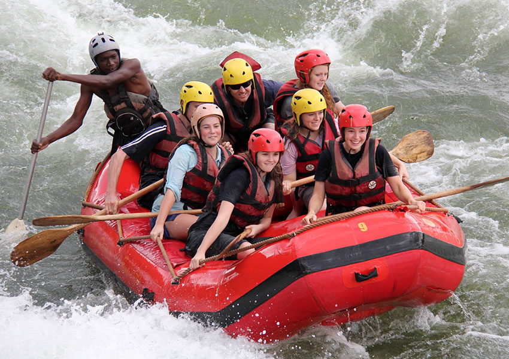

Our Trips

Calm River Adventure
Gentle rapids and scenic views—ideal for beginners and families.

Thrill Seeker's Run
Moderate whitewater fun for adventurers seeking excitement.

Extreme Rapids Expedition
Class V rapids and extreme terrain—only for experienced rafters.